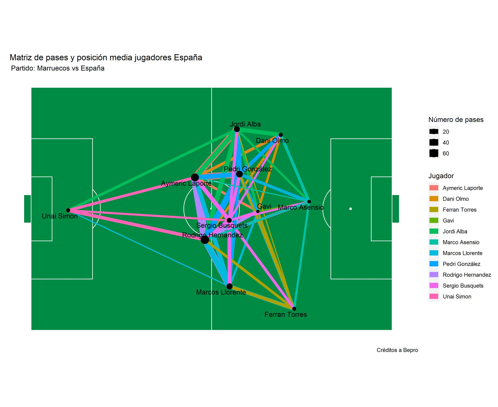
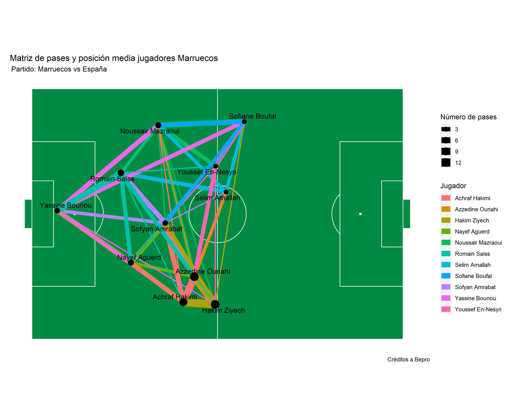

El partido de octavos de final de la copa mundial de futbol se disputó entre Marruecos y España, donde al final de un largo partido un Marruecos bien ordenado le plantó cara a una España sin muchas ideas, con mucha posesión (74,93 %) y con una enorme cantidad de pases realizados (965).
Gracias a la colaboración de Sports Data Campus y BEPRO fue posible contar con la información de todos los partidos de Octavos de final del mundial Qatar 2022 ⚽.
Esta base permite catalogar a los pases de acuerdo a tres categorías, la primera es su distancia, la segunda es su dirección y la tercera es según el área donde se efectúa el pase.
Con esta información se obtuvieron los siguientes gráficos,
- 📊 Porcentaje de eficacia en pases,
📌 España realizó de acuerdo con la data 965 pases con un 93,3% de efectividad.
📌 Marruecos por su parte realizó 305 pases con un 71,8% de efectividad.
- 📊 Distribución de pases según su distancia,
📌 España realizó 500 pases cortos, 415 medios y sólo 50 pases largos.
📌 Marruecos realizó 138 pases cortos, 105 pases medios y 62 pases largos.
- 📊 Distribución de pases según su dirección,
📌 España realizó 300 pases hacia adelante, 196 pases hacia atrás y 469 pases a los costados.
📌 Marruecos realizó 169 pases hacia adelante, 62 pases hacia atrás y 70 pases a los costados.
- 📊 Distribución de pases según el área donde se efectua,

📌 España realizó 74 pases en su área defensiva, 675 en el mediocampo y 216 pases en el tercio final.
📌 Marruecos realizó 138 pases en su área defensiva, 136 en el mediocampo y 31 pases en el tercio final.
5 y 6. 📊 Matriz de pases de España y Marruecos,
 📌 En España la mayor cantidad de pases fueron realizados por los centrales Laporte y Rodri, a estos se le suma Pedri en el mediocampo.
📌 En Marruecos se observa un equipo más retrasado casi siempre esperando antes del mediocampo, se observa conexiones importantes en la banda derecha entre Hakimi, Ounahi y Ziyech.
Como se pudo observar en el juego España basó su juego en el toque pero los mismos fueron intrascendentes pues carecían de profundidad y la mayoría se efectuaron en el mediocampo.